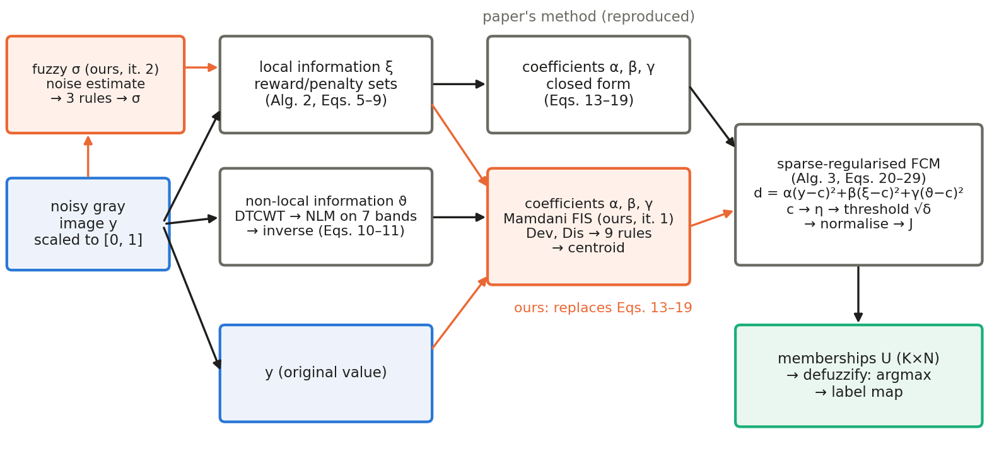
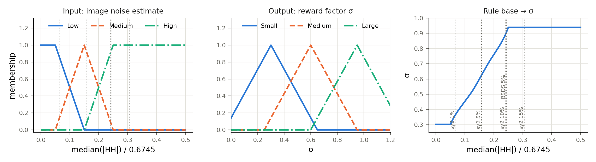

Abstract—We re-implement, from scratch, the adaptive sparse-regularized fuzzy C-means method with complementary spatial information of Wu et al. (Expert Systems with Applications, 2024) and reproduce its main experiments on three synthetic images and eight BSDS500 images. Our FCM baseline matches the paper-reported FCM results within {{E1_acc_mad}} accuracy points on average, and the reproduced method matches the paper within {{E2_acc_mad_low}} points up to 5 % mixed noise, while it is up to {{E2_acc_maxgap}} points lower at 15 % noise. In the process we document six ambiguities and inconsistencies of the paper, among them that its Kappa values are a fixed rescaling of accuracy and that, with the published parameters, its non-local means step behaves like a mean filter. As an extension we replace the paper's closed-form per-pixel trust coefficients by an explicit Mamdani fuzzy inference system with nine IF–THEN rules, and compare membership-function shapes, defuzzification methods and a Sugeno variant. The pre-registered rule base did not improve the method: it was significantly worse at high noise ({{E5_full_acc_drop15}} accuracy points on sy2/sy3 at 15 %), and an exploratory variant gave only small gains at low noise. Guided by the analysis of this failure, a second, pre-registered iteration with a separate tuning set adds a three-rule Mamdani system that sets the reward factor σ of the local term from an image-level noise estimate. It raises the accuracy by {{E8_fs_gain10}} and {{E8_fs_gain15}} points at 10 and 15 % noise (p < 0.001) without loss at low noise, and narrows the gap to the paper-reported values at 15 % noise from {{E8_gap15_before}} to {{E8_gap15_after}} points (sy2/sy3) without closing it; a control with a fixed σ = 0.9 shows that the gain comes from adapting σ rather than from the rule base itself. Combined with a bounded trust in the noisy pixel, the first rule base is no longer worse than the paper's formula anywhere.
Index Terms—fuzzy C-means, image segmentation, fuzzy inference system, reproducibility, dual-tree complex wavelet transform, sparse regularization.
I. Introduction
Segmentation divides an image into homogeneous regions and is a basic step of many vision pipelines. Fuzzy C-means (FCM) [2] is popular for this task because it assigns each pixel a degree of membership in every cluster instead of a hard label, but it treats pixels as independent points in gray-level space and is therefore very sensitive to noise [1]. A long line of work adds spatial information to FCM [8]–[23]. The reference paper of this project, Wu et al. [1], combines four ideas: (i) a local estimate ξ in which neighbours are split by gray-level rank into a golden-ratio reward set and a penalty set, (ii) a non-local estimate ϑ obtained by non-local means in the dual-tree complex wavelet (DTCWT) domain, (iii) per-pixel coefficients α, β, γ that weigh the original value against the two estimates, and (iv) an ℓ0 sparse regularization of the membership matrix solved by hard thresholding. The paper reports large gains over FCM and eight other methods.
This project follows the course guideline: examine the paper, re-implement it, reproduce at least one of its experiments, extend it, and evaluate the extension against the baseline in controlled experiments. Our contributions are:
- an independent open-source implementation of FCM and of the complete method with unit tests, re-created test data (synthetic images and BSDS500 ground truths extracted from the paper's figures) and a validated reading of the under-specified mixed-noise model;
- a reproduction of Tables 1–9 of [1] with 10 seeds per setting and an analysis of the differences, including six documented ambiguities or inconsistencies of the paper (Section IX);
- an extension that replaces the closed-form trust coefficients by an explicit Mamdani fuzzy inference system [35], with hypotheses fixed before the experiments, comparisons of membership functions, defuzzification methods and a Sugeno variant [36], robustness experiments for four noise types, and an honest negative result;
- a second, pre-registered iteration that targets the diagnosed causes of that result (a fuzzy rule for the reward factor σ, a bounded trust in the noisy pixel and an impulse input), tuned on separate noise realizations and tested once.
II. Related Work
Local spatial information. BCFCM [8] first added a neighbourhood term to the FCM objective; FCM_S1/S2 [9] replaced it with pre-filtered images and a kernel distance; FGFCM [10] combined spatial and gray-level similarity and clustered the gray-level histogram. FLICM [11] introduced a parameter-free fuzzy factor and led to KWFLICM [13] and ADFLICM [14]. FRFCM [15] uses morphological reconstruction [6] and membership filtering, DSFCM_N [16] models noise as a sparse deviation, and FCM_SICM [18] uses bilateral filtering and membership linking. As noted in [1], these operators essentially average the neighbourhood, which is biased when many neighbours are corrupted.
Non-local and region-level information. Following non-local means [5], FCM_SNLS [12] gathers information from pixels with similar patches. FALRCM [20] adds region-level information with median memberships, and FSC_LNML [22] combines fuzzy subspace clustering with adaptive local variance, non-local information and membership linking. Jiao et al. [24] build a weighted image from regional and local filtering and adapt, per pixel, its balance with the original image.
Transform domain and sparsity. WFCM [17] clusters in a wavelet-frame domain; SRFCM [19] adds morphological reconstruction and a sparse regularization of the memberships, solved by a Lagrangian step, thresholding and normalization — the scheme that [1] adopts. Chen et al. [25] use sparse self-representation within fuzzy clustering.
Other directions. Recent work changes the fuzzy partition itself [27], combines fuzzy clustering with deep networks [26], or estimates K automatically [28]. Among these methods, [1] is the only one that combines local, non-local, wavelet-domain, sparse and per-pixel adaptive components; its closest relatives are SRFCM [19] and FSC_LNML [22]. None of them expresses the per-pixel weighting as an explicit fuzzy rule base, which is the gap our extension addresses.
III. Theoretical Background
A. Fuzzy sets and fuzzy inference
A fuzzy set A on a universe X is defined by a membership function μA: X → [0,1] [34]. A Mamdani system [35] maps crisp inputs to crisp outputs in four steps: fuzzification (membership degrees of each input in its linguistic terms), rule evaluation (the firing strength of a rule “IF x1 is A AND x2 is B THEN z is C” is min(μA(x1), μB(x2))), implication and aggregation (each consequent set is clipped at its firing strength and the clipped sets are combined with max), and defuzzification of the aggregated set μ(z): the centroid ∫zμ(z)dz/∫μ(z)dz, the bisector of the area, or the mean of the maxima. In a zero-order Takagi–Sugeno system [36] the consequents are constants cr and the output is Σwrcr/Σwr.
B. Fuzzy C-means
FCM [2] partitions N gray values yj into K fuzzy clusters with centres ci by minimizing
with fuzzifier m > 1. Alternating optimization gives uij = 1/Σr(|yj−ci|/|yj−cr|)2/(m−1) and ci = Σjuijmyj/Σjuijm; each step cannot increase J. Each cluster is a fuzzy set over the pixels, and the crisp segmentation is obtained by defuzzification with argmaxi uij.
C. DTCWT and non-local means
The DTCWT [4] uses two real wavelet trees whose outputs form the real and imaginary parts of complex coefficients; it is nearly shift invariant and separates six orientations (±15°, ±45°, ±75°). Non-local means [5] replaces each value by a weighted mean of the values in a search window, the weights decreasing with the Gaussian-weighted distance between the surrounding patches.
IV. Original Method

Local information ξ (Alg. 2 of [1]). In a w×w window the NR−1 neighbours of pixel i are sorted; the middle ⌈0.618(NR−1)⌉ form the reward set, the others the penalty set. With Sij = exp(−(xj−xi)²/τi²), τi² = Σp(xp−xi)²/NR, the weights are SSij = (1±σ)Sij·exp(−dij) and ξi = ΣjSSijxj/ΣjSSij, where dij is the spatial distance.
Non-local information ϑ. The image is decomposed by a one-level DTCWT; non-local means with an S×S search window, w×w patches, Gaussian patch weights of standard deviation υ and filtering parameter g·w² is applied to all seven sub-images (Eqs. 10–11 of [1]); the inverse transform gives ϑ.
Adaptive coefficients. With ΔG1 = k·exp(yj−ξj) and ΔG2 = k·exp(yj−ϑj), αj = 1/(ΔG1+ΔG2), βj = ΔG1, γj = ΔG2. A pixel that differs from its estimates receives less trust in its own value.
Sparse-regularized FCM (Alg. 3 of [1]). The objective is
and each iteration computes centres ci = Σjuijm(αjyj+βjξj+γjϑj)/Σjuijm(αj+βj+γj), FCM-type memberships ηij from dij, sets ηij < √δ to zero and renormalizes the columns. Parameters: w = 5, S = 15, υ = 4, g = 10, σ = 0.3, k = 15, δ = 0.4, m = 2, ε = 10−6, T = 100.
Fuzzy-system view. Inputs are y, ξ and ϑ; each cluster is a fuzzy set whose membership function is uij; the role of an inference mechanism is played by the minimization of (2) (“a pixel close to ci in the weighted distance belongs strongly to cluster i”); defuzzification is argmax. The method contains no explicit rule base — the motivation for our extension.
V. Reproduction Methodology
Implementation. Everything is written in Python 3.12 (NumPy, SciPy, OpenCV, dtcwt) without code from the authors. Each module is unit-tested ({{n_tests}} tests): for example, the vectorized non-local means equals a direct transcription of Eqs. 10–11, the reward/penalty sets of the worked example in Fig. 1 of [1] are reproduced exactly, and the sparse method reduces exactly to FCM when the extra terms are switched off. FCM and the proposed method share the same random initial memberships for a given seed.
Data. The synthetic images are not published, so we extracted the raster of Fig. 9 of [1], resized each panel to 256×256 and assigned every pixel to the nearest of the measured gray levels (sy1: 0/255, K = 2; sy2: 0/107/255, K = 3; sy3: 0/107/222, K = 3). For BSDS500 [7] the paper evaluates against simplified 2–4 class ground truths shown in its Fig. 22; we re-created them the same way and validated them against the human segmentations (93.5–99.7 % agreement after merging regions). Color images are converted to gray with BT.601 weights.
Noise. [1] describes “equal proportions of Gaussian, salt-and-pepper and multiplicative noise” without a definition of the level. We read p % mixed noise as Gaussian noise of variance p, then speckle (multiplicative uniform noise of variance p), then salt-and-pepper of density p. With this reading our FCM reproduces the paper-reported FCM within {{E1_acc_mad}} ACC points on average (Section VIII-A), which supports it.
Metrics. VPC, VPE (from U), ACC, F-score (macro average), NMI and Kappa (from the label map). Clusters are matched to classes with the Hungarian algorithm. We report Cohen's kappa; for comparison with the paper we also compute the rescaled ACC that its Kappa values correspond to (Section IX).
Interpretation choices. Table I lists the decisions that affect the results; all are recorded with their evidence in report/decisions.md.
VI. Proposed Extension: Mamdani Rule Bases for the Method's Weights
A. First iteration: a rule base for the trust coefficients
Motivation. With k = 15 and gray values in [0,1], ΔG lies in [5.5, 40.8]; hence α ≈ 0.01–0.1 and β ≈ γ for almost every pixel, and the two estimates are always weighted alike. Our reproduction shows that they fail in different places: with the published parameters the non-local step acts almost as a 15×15 mean filter on each sub-band (strong in flat regions, blurring at edges), while ξ is edge-aware but weaker under heavy noise. A rule base can express such knowledge explicitly, is inspectable, and connects the method to fuzzy inference.
Design (fixed before the experiments). Two inputs per pixel: Dev = |y − (ξ+ϑ)/2| (deviation from the consensus; large ⇒ probably noise) and Dis = |ξ − ϑ| (disagreement of the estimates; large ⇒ probably an edge). Terms Small/Medium/Large on [0,1] (triangular/trapezoidal; Gaussian variant with the same crossover points); outputs α, β, γ with terms Low/Medium/High (Fig. 2). The nine rules are given in Table II; inference uses min/min/max and centroid defuzzification, and the outputs are normalized to α+β+γ = 1 per pixel. A zero-order Sugeno version uses the same rules with the output-term centroids as constants. The FIS is evaluated once per image.
{{TABLE_rules}}
Hypotheses (CP4, committed before the runs). H1: the FIS raises ACC at 10–15 % noise on sy2/sy3 and loses at most 0.5 points at 1–5 %. H2: it also raises the mean ACC on the BSDS500 images. H3: membership shape and defuzzification change ACC by less than one point. H4: Sugeno is within one point of Mamdani-centroid. Exploratory variant. After the first runs showed that the pre-registered FIS (“full”) gives the noisy pixel about 30 % of the total trust (paper: about 0.1 %), we added exactly one post-hoc variant, “split”, which keeps the paper's α and total trust β+γ and uses the FIS only to divide that trust between ξ and ϑ. No other variant was tuned on the results.
B. Second iteration: a fuzzy reward factor (pre-registered)
Diagnosis. The first iteration failed for two measured reasons (Section IX): the rule base leaves the noisy pixel about 30 % of the trust, and its inputs cannot separate edges from noise once ξ is noisy. The single-factor ablation (Section VIII-E) further shows that the reward factor σ of the local term dominates the high-noise behaviour: σ = 0.3 suffices at low noise, a larger σ is much better at high noise. A fixed number cannot suit every image, which is a natural task for a rule base: the noisier the image, the more strongly the outliers of each window should be penalized.
Candidates. (A) the first rule base with its α output range shrunk to the range the paper's formula produces (factor 0.002, the median ratio between the two α shares); (B) a third input Imp = |y − median3×3(y)| with the rules “IF Imp is Large AND Dis is … THEN α is Low”; (C) a Mamdani system with one input, the image-level noise estimate median(|HH|)/0.6745 of the finest diagonal Haar coefficients (a robust estimate of the noise standard deviation: flat regions give HH = 0, and for Gaussian noise median|n| = 0.6745σn), terms Low/Medium/High, one output σ with terms Small/Medium/Large and the three rules Low→Small, Medium→Medium, High→Large (Fig. 3), at image or pixel level; and combinations.
Protocol (CP6, committed before each step). Candidates were tuned only on seeds 100–104 (noise realizations used nowhere else) with a budget of 12 configurations, all logged; the variant with the highest mean tuning ACC was selected by a rule fixed in advance; the selected variant and hypotheses were committed before the single run on the test seeds 0–9. Because the ideas for B and C came from observations on the test seeds, the test is blind to their parameters but not to their idea. {{E8_n_configs}} configurations were used: A and A+B reached only the level of the split variant ({{E8_tune_A}} vs {{E8_tune_paper}} % for the paper's coefficients), B alone {{E8_tune_B}}, the C variants {{E8_tune_C}} and, with the largest output term at 0.95, {{E8_tune_T7}} % — the selected variant FIS-σ. A fixed σ = 0.9 reached {{E8_tune_fixed}} %. The combination C+A ({{E8_tune_T8}} %) was never below the paper's coefficients on the tuning set and was declared as a secondary variant, FIS-σ+A.

Hypotheses (D-045). H5: FIS-σ has a higher mean ACC than the paper's settings at 10 and 15 % noise (paired Wilcoxon over the 30 image–seed pairs, p < 0.05) and is nowhere more than 0.5 point lower at 1 and 5 %. H5-control (expected null): FIS-σ and a fixed σ = 0.9 differ by less than 0.5 point on every mixed-noise setting; an advantage of the rule over the fixed value can only appear for other noise types, low noise or natural images. H6: FIS-σ+A is nowhere below the paper's settings.
VII. Experimental Setup
Synthetic images: mixed noise of 1, 5, 10 and 15 %; BSDS500: 5 %; robustness: Gaussian, speckle, salt-and-pepper and mixed noise at 0–20 %. Every setting is run with 10 seeds; a seed fixes the noise realization and the initial memberships, which are shared by all methods. We report mean ± standard deviation and paired two-sided Wilcoxon signed-rank tests over the seeds (α = 0.05). E1–E3 reproduce Tables 2–8 (FCM and proposed method) and the ablation of Table 1; E4 repeats the parameter study of Figs. 10–13; E5 evaluates the extension (main comparison, FIS variants, robustness per noise type, single-factor ablation of the paper's arbitrary choices); E6 uses the eight BSDS500 images; E7 measures run time on an otherwise idle laptop CPU ({{cpu_note}}); E8 is the second iteration (tuning seeds 100–104, test seeds 0–9 on the synthetic grid, on the four noise types at 0–20 % and on BSDS500 in gray and colour, with a fixed σ = 0.9 as an additional control). All tables and figures are generated by scripts from the per-run CSV files.
{{RESULTS_AND_REST}}